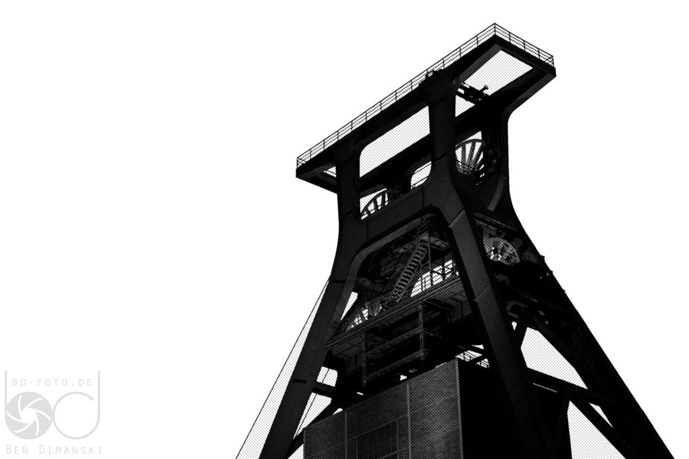

探索德国鲁尔区工业遗产：埃森关税同盟煤矿工业区

埃森关税同盟煤矿工业区（Zollverein）是德国鲁尔区最具代表性的工业遗产之一，也被联合国教科文组织列为世界文化遗产。这里不仅记录了德国工业发展的辉煌历史，也展现了现代艺术与文化的交融。无论你是历史爱好者、建筑迷，还是喜欢探索新体验的旅行者，这里都能让你流连忘返。
如何到达
埃森关税同盟煤矿工业区位于德国北莱茵-威斯特法伦州的埃森市，交通便利。从埃森市中心乘坐公共交通（如公交车或地铁）即可轻松抵达。如果你从其他城市出发，建议搭乘火车到埃森火车站，再转乘当地交通工具。自驾游的朋友也可以通过高速公路方便地到达，园区内设有免费停车场。
最佳旅行时间
埃森关税同盟煤矿工业区全年开放，但最佳旅行时间是春季到秋季（4月至10月）。这段时间天气宜人，适合户外活动和参观。夏季园区会举办各种文化活动和音乐节，气氛热烈。冬季虽然寒冷，但园区内的圣诞市场和灯光秀也别有一番风味。
5个不可错过的亮点
1. 关税同盟煤矿博物馆：了解煤矿的历史和工作条件，感受工业时代的脉搏。博物馆通过丰富的展品和互动体验，让参观者身临其境。
2. 红点设计博物馆：这座博物馆是世界知名的设计展览中心，展示了全球顶尖的工业设计作品，是设计爱好者的天堂。
3. 园区建筑与艺术装置：工业建筑与现代艺术的结合是这里的一大特色。漫步园区，你会看到许多令人惊叹的艺术装置和设计作品。
4. 工业遗迹徒步路线：沿着园区的徒步路线，你可以近距离观察工业遗迹，感受历史的厚重感。
5. 文化活动和展览：园区全年举办各类文化活动，包括音乐会、艺术展和工作坊等，为游客提供丰富的文化体验。
当地美食推荐
游览埃森关税同盟煤矿工业区时，别忘了品尝当地美食。鲁尔区的传统菜肴以丰盛和实在著称，推荐尝试Currywurst（咖喱香肠）和Schnitzel（炸猪排）。此外，园区内和附近有许多咖啡馆和餐厅，提供现代风味的德式菜肴和国际美食，适合不同口味的游客。
埃森关税同盟煤矿工业区不仅是一段历史的见证，也是现代文化与艺术的交汇点。无论你是想深入了解德国的工业遗产，还是寻找独特的旅行体验，这里都值得你花时间探索。
Haiktec
Text mit KI erstellt und automatisch geprueft.